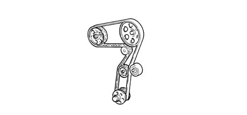
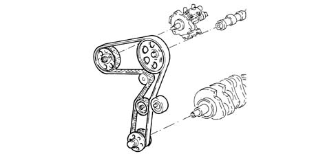

1032B BELT TIMING SYSTEM
- Path
- Descriptions > 10 ENGINE > 1032 TIMING SYSTEM > 1032B BELT TIMING SYSTEM
- Kind
- system description
- Applies to
- engines: 1.9 JTD 8v, 1.9 JTD 16v, 2.4 JTD 20v; all production periods
- Interactive page
- https://sloeber94.github.io/elrnDB-fCrm/en/#/194002388
Applies to: engines: 1.9 JTD 16v; all production periods
CONSTRUCTION SPECIFICATIONS
Direct control, via toothed belt, which drives the pressure pump and water pump in addition to the camshaft.

Applies to: engines: 1.9 JTD 8v; all production periods
CONSTRUCTION SPECIFICATIONS
Direct control, via toothed belt, which drives the pressure pump and water pump in addition to the camshaft.

Applies to: engines: 2.4 JTD 20v; all production periods
BELT-DRIVEN TIMING SYSTEM
Specifications
Type
Direct control, via toothed belt, which drives the pressure pump and water pump in addition to the camshaft.